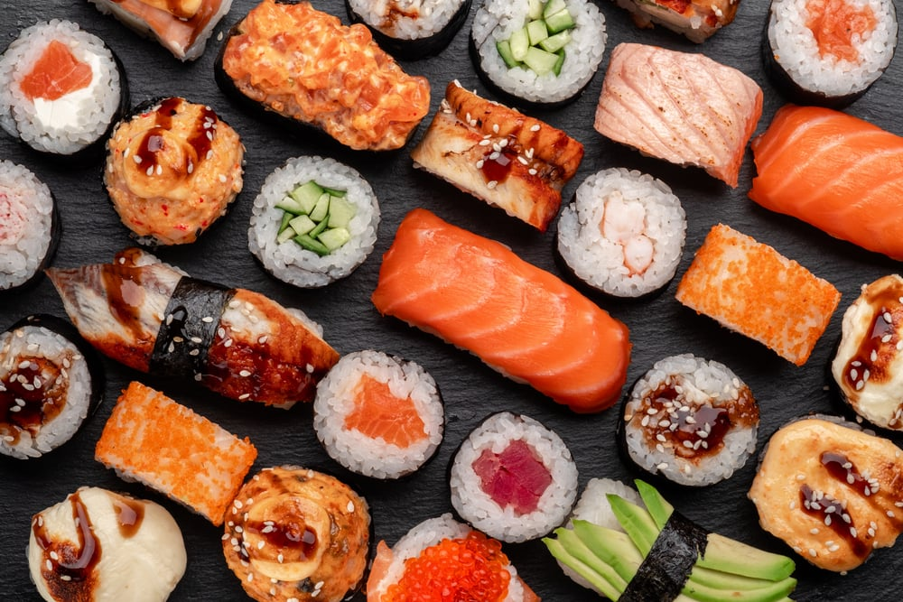
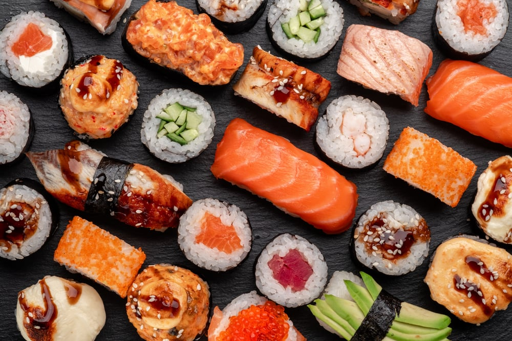

Food
Growing up in Vietnam, food was everywhere. Street food culture was huge in my hometown of Saigon. Unfortunately, when I was young, I had no interest in food whatsoever. I was a very picky eater and would sometimes eat the same thing for weeks in a row.
When I became a teenager in the US, there was a show I would often watch called Bizarre Foods With Andrew Zimmern. This show is what transformed me into the foodie that I am today. I found it really fascinating, the things that he would eat, and how adventurous he was with food. It pushed me to also try new things and made me discover that I actually did love so many foods out there... and that's how I became obsessed with food lol.
List of Foods I Love:

 


Click on each food bullet to see my favorite places to eat them!
Video Games
I fell in love with video games in elementary school when they would
let me play on
coolmath.com
The first game I was really addicted to was Runescape.
But the game that I became completely obsessed with for most of my
life was Maplestory.
The game that I'm currently obsessed with now is Overwatch lol.

Netflix
I'm ashamed to say that Netflix takes up a huge part of my life lol. I spend a lot of time watching random things. My favorite genre is horror, but I watch everything that's popular on Netflix. Video games can sometimes make me really angry and tilted lol so sometimes I love to just lay in bed and get lost in a different story in a different world, following different lives.
Here are lists of my favorite shows and movies on Netflix (Click on the picture to go to Netflix!):
Shows
- Love, Chunibyo & Other Delusions!
- It's Okay to Not Be Okay
- The Witcher
- Business Proposal
- Erased
- You
- Sweet Home
- Bridgerton
Movies
- The Little Prince
- The Conjuring Series
- Train To Busan
- The Autopsy of Jane Doe
- #Alive
- The Chalk Line
- Bird Box
- Incident in a Ghostland